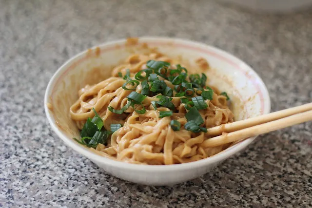

What You Need
| Wet Ingredients |
Amount |
Dry Ingredients |
Amount |
| Water |
1 cup |
All Purpose Flour |
3 cups |
| lye water |
1 tablespoon |
Salt |
1/2 teaspoon |
| Lard |
1 tablespoon |
Tahina |
1 tablespoon |
| Soy Sauce |
2 tablespoons |
Five Spice Powder |
1/4 teaspoon |
| Balsamic Vinegar |
1/2 teaspoon |
Chicken Essence |
1/8 teaspoon |
Steps
- Get a bowl and add the flour, lye water, and salt.
- Then slowly add the water, don't pour too much and slowly mix
- Put flour around your bowl and knead the dough
- Then,let it rest for 5 minutes
- Add flour and roll the dough in a long log and devide the dough into pieces
- Use your rolling pin and roll the dough flat and even while adding flour
- Cut the strips thin, freeze the rest you don't want to cook
- To make the sauce you need to add the lard and the Tahina
- After this add the lye water and mix until it becomes a very thin mixture
- Add the spice mix, the oil, vinegar, chicken essence, soysauce,andgreen onions
- Now its time to boil the water and then put the noodles in. Make sure you have enough water
- Cook until the noodles become transparent and then add the sauce, then your noodles will be ready to eat.Make sure you eat it now or it will become sticky!
Click here to go back!

By Christina xu, wordpress.com